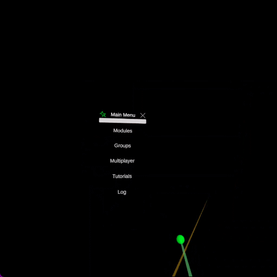
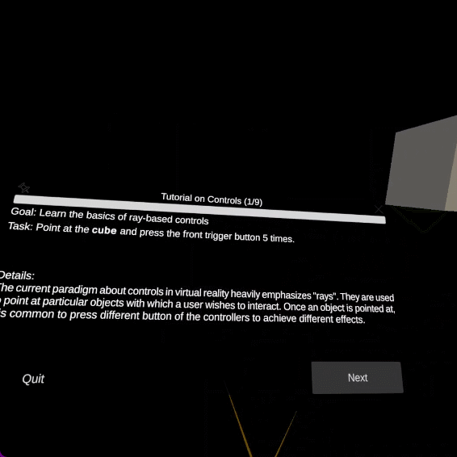
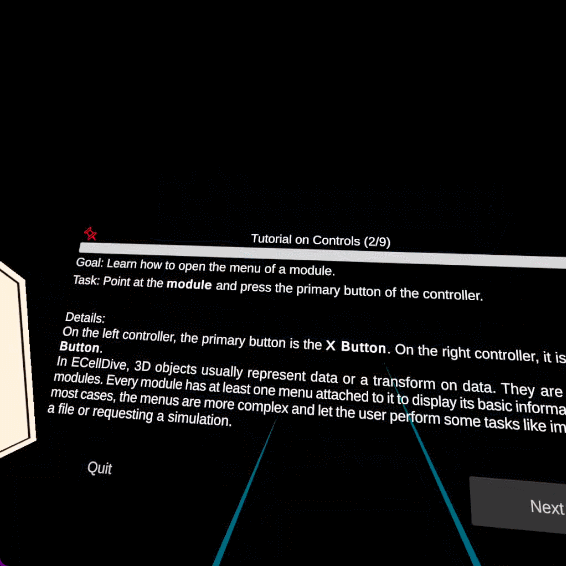
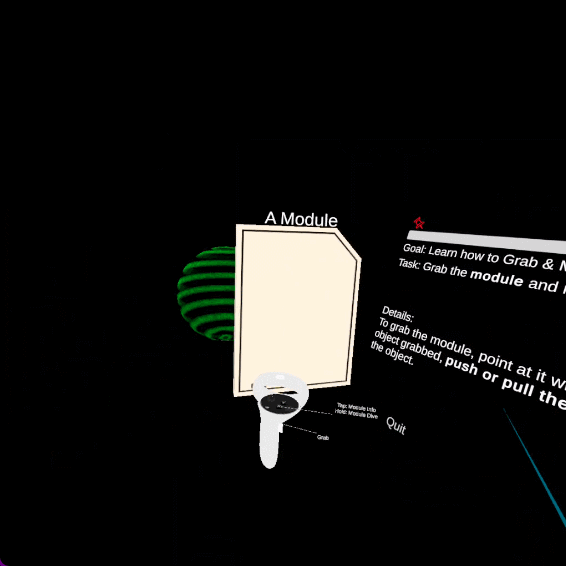
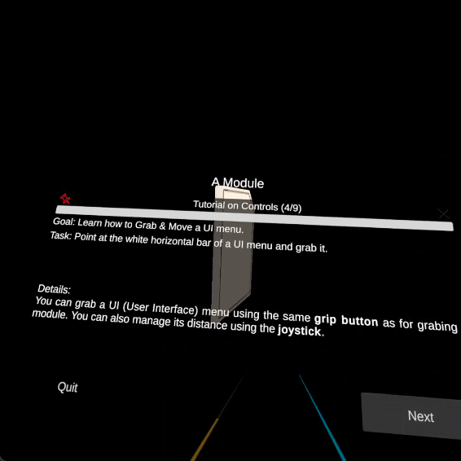
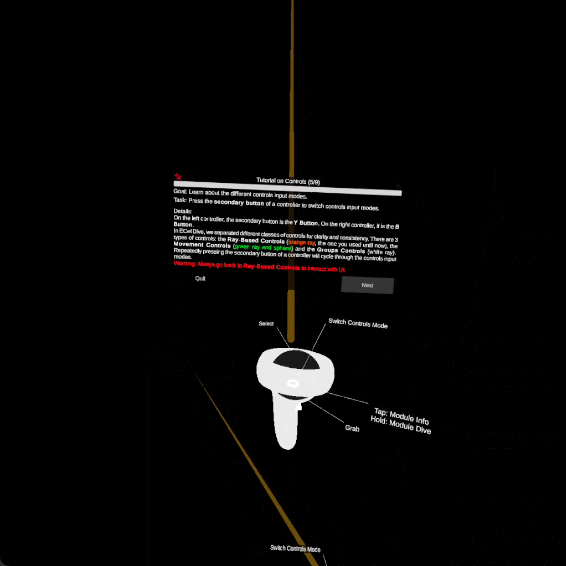
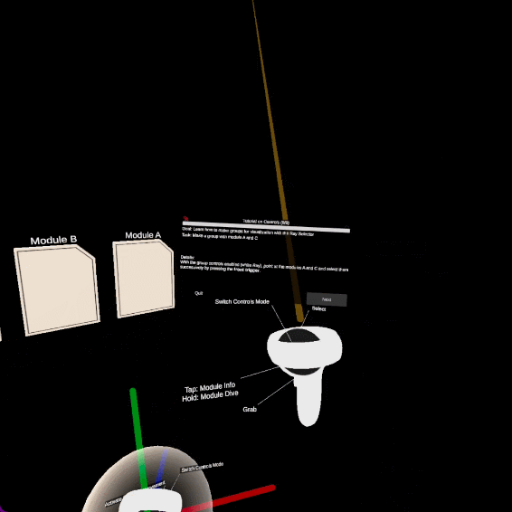

Tutorial on Control
The purpose of this tutorial is for users to get accustomed with the various inputs and their effects in ECellDive. Details about individual controls are also available on a dedicated page.
Duration
Novices that have never tried VR before have taken up to 40 minutes to complete this tutorial. On the other hand, users that already have experience took under 15 minutes.
Launch the Tutorial
This tutorial is accessible through the general tutorial menu. The steps to find it are:
- Open the main menu
- Click on the button Tutorials
- Click on the button Controls
Launch
Step 1
Goal
Learn the basics of ray-based controls
Task
Point at the cube visible above the UI panel and press the front trigger button 5 times.
Details
The current paradigm about controls in VR heavily emphasizes "rays". They are used to point at particular objects with which a user wishes to interact. Once an object is pointed at, it is common to press different button of the controllers to achieve different effects.
Example
Step 2
Goal
Learn how to open the menu of a module.
Task
Point at the module's 3D model on the left and press the primary button of the controller.
Details
On the left controller, the primary button is the X Button. On the right controller, it is the A Button. In ECellDive, 3D objects usually represent data or a transform on data. They are called modules. Every module has at least one menu attached to it to display its basic information. In most cases, the menus are more complex and let the user perform some tasks like importing a file or requesting a simulation.
Example
Step 3
Goal
Learn how to Grab & Move an object.
Task
Grab the module and move it 5 times to the green areas around you.
Details
To grab the module, point at it with a controller and hold down its grip trigger. With the object grabbed, push or pull the joystick of that same controller to control the distance of the object.
Example
Step 4
Goal
Learn how to Grab & Move a UI menu.
Task
Point at the white horizontal bar of a UI menu and grab it.
Details
You can grab a UI (User Interface) menu using the same grip trigger as for grabing a module. Similarly, you can also manage its distance using the joystick.
Example
Step 5
Goal
Learn about the different controls input modes.
Task
Press the secondary button of a controller to switch controls input modes.
Details
On the left controller, the secondary button is the Y Button. On the right controller, it is the B Button. In ECellDive, we separated different classes of controls for clarity and consistency. There are 3 types of controls: the Ray-Based Controls (orange ray, the one you used until now), the Movement Controls (green ray and sphere) and the Groups Controls (white ray). Repeatedly pressing the secondary button of a controller will cycle through the controls input modes.
Warning
Warning: Always go back to Ray-Based Controls to interact with UI.
Example
Step 6
Goal
Learn how to move by teleporting.
Task
Switch to Movement Controls and press the front trigger to teleport at least once.
Details
Use the secondary button of a controller to switch to the movement input controls on that controller. The movement input control is the green ray and sphere. The sphere represents the teleportation target. You can use the Joystick to adjust the teleportation distance.
Example

Step 7
Goal
Learn how to move continously.
Task
Switch movement mode and try moving continuously.
Details
Warning
Continuous movement can cause motion sickness. Everybody has different sensitivity to motion sickness: be careful and try to learn your limit. You can skip this step if you wish by directly pressing Next.
With the movement controls enabled on one controller, you can switch the movement mode from teleportation to continuous by pressing the primary button of that controller (X and A on left and right controllers repsectively). The continous movement mode is represented by a transparent sphere with three axes (X, Y, Z). To activate continuous movement, press the front trigger and move your hand in the desired direction.
Example

Step 8
Goal
Learn how to make groups for visualization with the Ray Selector.
Task
Make a group with module A and C.
Details
With the Ray Selector enabled (white Ray), point at the modules A and C and select them successively by pressing the front trigger.
Example
Step 9
Goal
Learn how to make groups for visualization with the Volumetric Selector
Task
Make a group with module A, B and C
Details
With the group controls enabled on a controller, you can switch from the Ray Selector to the Volumetric Selector by pressing the primary button of that controller (X or A on the left or right controller respectively). You can activate the Volumetric Selector by holding down the front trigger (sphere becomes green). Once activated, every module that collides with the sphere is added to the group. You can control the distance and scale of the sphere with the Joystick.